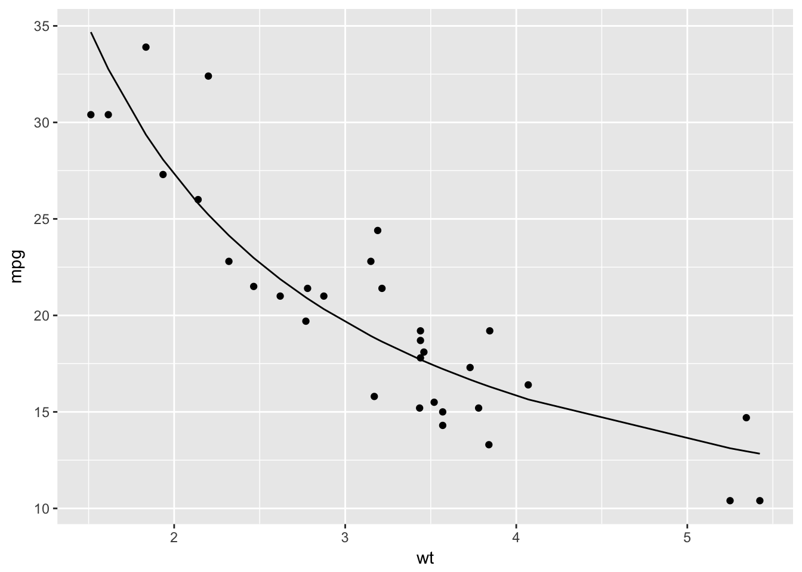
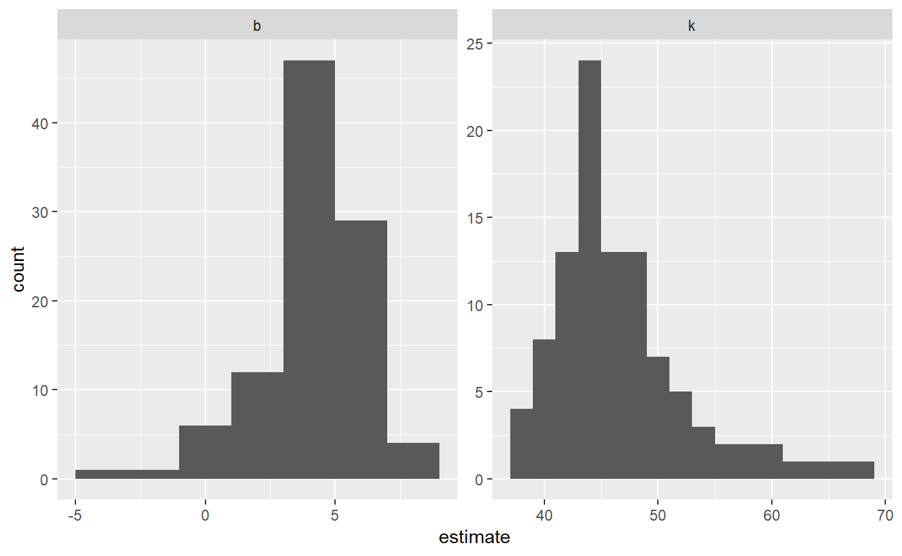
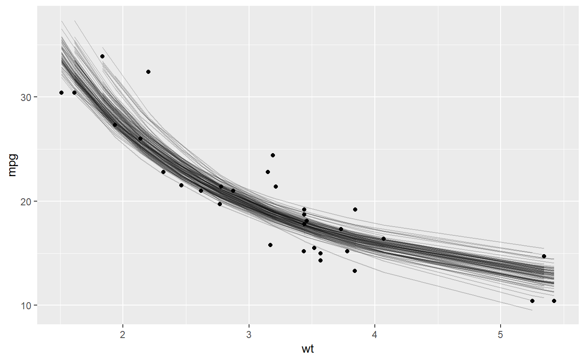
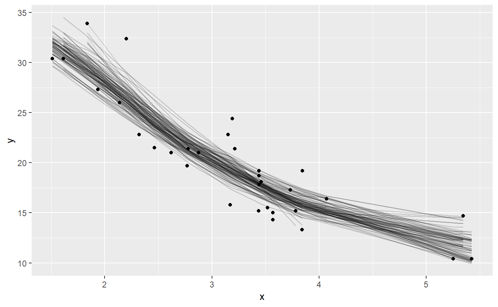

Tidy bootstrapping
Another place where combining model fits in a tidy way becomes useful is when performing bootstrapping or permutation tests. These approaches have been explored before, for instance by Andrew MacDonald here, and Hadley has explored efficient support for bootstrapping as a potential enhancement to dplyr. broom fits naturally with dplyr in performing these analyses.
Bootstrapping consists of randomly sampling a dataset with replacement, then performing the analysis individually on each bootstrapped replicate. The variation in the resulting estimate is then a reasonable approximation of the variance in our estimate.
Let’s say we want to fit a nonlinear model to the weight/mileage relationship in the mtcars dataset.
library(ggplot2)
ggplot(mtcars, aes(mpg, wt)) +
geom_point()
We might use the method of nonlinear least squares (via the nls function) to fit a model.
nlsfit <- nls(mpg ~ k / wt + b, mtcars, start = list(k = 1, b = 0))
summary(nlsfit)
#>
#> Formula: mpg ~ k/wt + b
#>
#> Parameters:
#> Estimate Std. Error t value Pr(>|t|)
#> k 45.829 4.249 10.786 7.64e-12 ***
#> b 4.386 1.536 2.855 0.00774 **
#> ---
#> Signif. codes: 0 '***' 0.001 '**' 0.01 '*' 0.05 '.' 0.1 ' ' 1
#>
#> Residual standard error: 2.774 on 30 degrees of freedom
#>
#> Number of iterations to convergence: 1
#> Achieved convergence tolerance: 2.877e-08
ggplot(mtcars, aes(wt, mpg)) +
geom_point() +
geom_line(aes(y = predict(nlsfit)))
While this does provide a p-value and confidence intervals for the parameters, these are based on model assumptions that may not hold in real data. Bootstrapping is a popular method for providing confidence intervals and predictions that are more robust to the nature of the data.
We can use the bootstraps function in the rsample package to sample bootstrap replications. First, we construct 100 bootstrap replications of the data, each of which has been randomly sampled with replacement. The resulting object is an rset, which is a dataframe with a column of rsplit objects.
An rsplit object has two main components: an analysis dataset and an assessment dataset, accessible via analysis(rsplit) and assessment(rsplit) respectively. For bootstrap samples, the analysis dataset is the bootstrap sample itself, and the assessment dataset consists of all the out of bag samples.
library(dplyr)
library(rsample)
library(broom)
library(purrr)
set.seed(27)
boots <- bootstraps(mtcars, times = 100)
boots
#> # Bootstrap sampling
#> # A tibble: 100 x 2
#> splits id
#> <list> <chr>
#> 1 <S3: rsplit> Bootstrap001
#> 2 <S3: rsplit> Bootstrap002
#> 3 <S3: rsplit> Bootstrap003
#> 4 <S3: rsplit> Bootstrap004
#> 5 <S3: rsplit> Bootstrap005
#> 6 <S3: rsplit> Bootstrap006
#> 7 <S3: rsplit> Bootstrap007
#> 8 <S3: rsplit> Bootstrap008
#> 9 <S3: rsplit> Bootstrap009
#> 10 <S3: rsplit> Bootstrap010
#> # ... with 90 more rowsWe create a helper function to fit an nls model on each bootstrap sample, and then use purrr::map to apply this function to all the bootstrap samples at once. Similarly, we create a column of tidy coefficient information by unnesting.
fit_nls_on_bootstrap <- function(split) {
nls(mpg ~ k / wt + b, analysis(split), start = list(k = 1, b = 0))
}
boot_models <- boots %>%
mutate(model = map(splits, fit_nls_on_bootstrap),
coef_info = map(model, tidy))
boot_coefs <- boot_models %>%
unnest(coef_info)The unnested coefficient information contains a summary of each replication combined in a single data frame:
boot_coefs
#> # A tibble: 200 x 6
#> id term estimate std.error statistic p.value
#> <chr> <chr> <dbl> <dbl> <dbl> <dbl>
#> 1 Bootstrap001 k 42.1 3.76 11.2 2.99e-12
#> 2 Bootstrap001 b 5.76 1.43 4.02 3.60e- 4
#> 3 Bootstrap002 k 46.3 3.72 12.4 2.26e-13
#> 4 Bootstrap002 b 4.10 1.43 2.87 7.38e- 3
#> 5 Bootstrap003 k 56.1 3.80 14.7 2.77e-15
#> 6 Bootstrap003 b 0.935 1.31 0.713 4.82e- 1
#> 7 Bootstrap004 k 43.5 3.39 12.8 1.06e-13
#> 8 Bootstrap004 b 4.83 1.33 3.62 1.06e- 3
#> 9 Bootstrap005 k 41.3 3.74 11.0 4.26e-12
#> 10 Bootstrap005 b 5.37 1.31 4.11 2.81e- 4
#> # ... with 190 more rowsWe can then calculate confidence intervals (using what is called the percentile method):
alpha <- .05
boot_coefs %>%
group_by(term) %>%
summarize(low = quantile(estimate, alpha / 2),
high = quantile(estimate, 1 - alpha / 2))
#> # A tibble: 2 x 3
#> term low high
#> <chr> <dbl> <dbl>
#> 1 b -0.695 7.40
#> 2 k 38.7 62.3Or we can use histograms to get a more detailed idea of the uncertainty in each estimate:
ggplot(boot_coefs, aes(estimate)) +
geom_histogram(binwidth = 2) +
facet_wrap(~ term, scales = "free")
Or we can use augment to visualize the uncertainty in the curve:
boot_aug <- boot_models %>%
mutate(augmented = map(model, augment)) %>%
unnest(augmented)
boot_aug
#> # A tibble: 3,200 x 5
#> id mpg wt .fitted .resid
#> <chr> <dbl> <dbl> <dbl> <dbl>
#> 1 Bootstrap001 21.4 2.78 20.9 0.484
#> 2 Bootstrap001 22.8 2.32 23.9 -1.12
#> 3 Bootstrap001 30.4 1.51 33.6 -3.20
#> 4 Bootstrap001 17.8 3.44 18.0 -0.209
#> 5 Bootstrap001 24.4 3.19 19.0 5.43
#> 6 Bootstrap001 17.3 3.73 17.1 0.243
#> 7 Bootstrap001 22.8 2.32 23.9 -1.12
#> 8 Bootstrap001 21 2.62 21.8 -0.841
#> 9 Bootstrap001 18.7 3.44 18.0 0.691
#> 10 Bootstrap001 14.3 3.57 17.6 -3.26
#> # ... with 3,190 more rowsggplot(boot_aug, aes(wt, mpg)) +
geom_point() +
geom_line(aes(y = .fitted, group = id), alpha=.2)
With only a few small changes, we could easily perform bootstrapping with other kinds of predictive or hypothesis testing models, since the tidy and augment functions works for many statistical outputs. As another example, we could use smooth.spline, which fits a cubic smoothing spline to data:
fit_spline_on_bootstrap <- function(split) {
data <- analysis(split)
smooth.spline(data$wt, data$mpg, df = 4)
}
boot_splines <- boots %>%
mutate(spline = map(splits, fit_spline_on_bootstrap),
aug_train = map(spline, augment))
splines_aug <- boot_splines %>%
unnest(aug_train)
ggplot(splines_aug, aes(x, y)) +
geom_point() +
geom_line(aes(y = .fitted, group = id), alpha = 0.2)